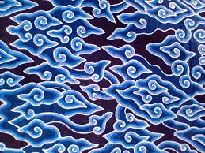
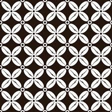

Batik Parang
Motif Parang melambangkan kekuatan dan keberanian. Digunakan oleh para bangsawan Jawa.
- Asal: Yogyakarta
- Warna dominan: Coklat dan krem
- Teknik: Tulis
Produk Lainnya

Batik Megamendung
Cirebon – Motif awan melambangkan keteduhan.

Batik Kawung
Yogyakarta – Motif biji aren melambangkan kesucian.

Batik Lasem
Lasem – Dikenal dengan warna merah khas Tiongkok.